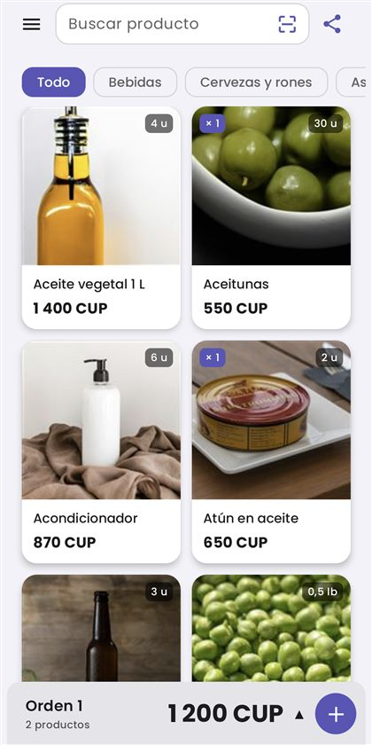
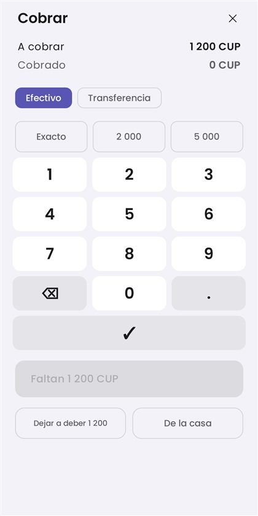
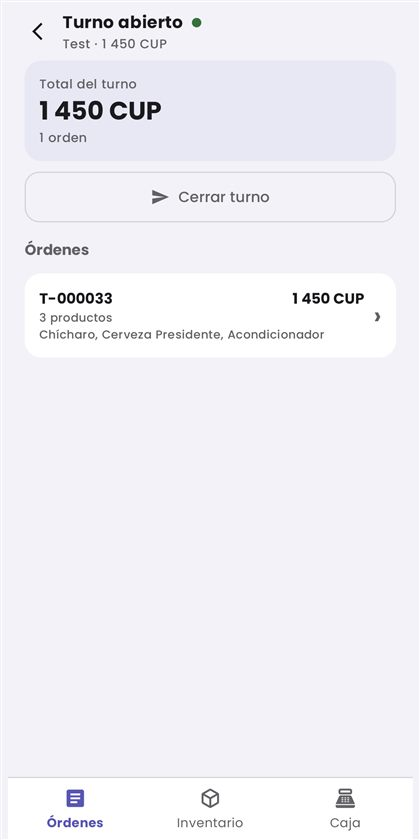
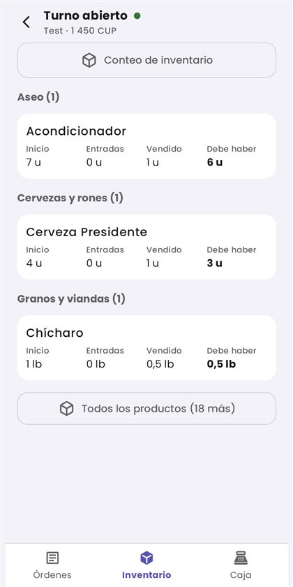

Kubo son dos apps de Android para un negocio pequeño: una bodega, un puesto, un mostrador. KuboGo lleva las compras, el inventario y el capital. KuboSales atiende el mostrador: vende, lleva el turno y cuadra la caja.
Funcionan sin conexión a internet y los datos se quedan en el teléfono: no hay cuentas de usuario ni servidores donde guardarlos.
Se pueden usar juntas o por separado. Quien vende solo, con KuboSales tiene bastante; quien además compra y cuadra, usa las dos.
Para quien lleva el negocio.
Para quien atiende el mostrador.
Sin servidores de por medio. Lo que se comparte, lo comparte quien usa la app.
Productos, ventas, caja y fotos se guardan en el propio aparato. No hay que registrarse ni crear una cuenta, y la app funciona igual sin cobertura.
La mercancía de un turno viaja en un archivo que se manda por WhatsApp o por Bluetooth, y el cierre vuelve por el mismo camino. Lo manda una persona, no la app por su cuenta.
Con las dos apps instaladas se entienden entre ellas: lo que se da de entrada en KuboGo aparece en el mostrador de KuboSales sin mandar nada.
Capturas de KuboSales, tomadas de la app tal como está.




Las dos apps traen un modo demo: se entra desde la pantalla inicial, sin código y sin registrarse. Monta un negocio de ejemplo con productos y mercancía para probarlo todo. Dura unos días y después se borra solo.
Para trabajar con tus datos hace falta una licencia, que se activa escaneando un código QR. Escríbenos y te decimos cómo conseguirla.
Solo estos dos, y cada uno para algo que se ve en pantalla.
Para leer códigos de barras y códigos QR, y para hacerle la foto a un producto.
Para imprimir el ticket en una impresora térmica y para pasar archivos entre dos teléfonos.
No piden ubicación ni contactos. En la política de privacidad está el detalle de qué guarda cada app y cuándo sale algo del teléfono.